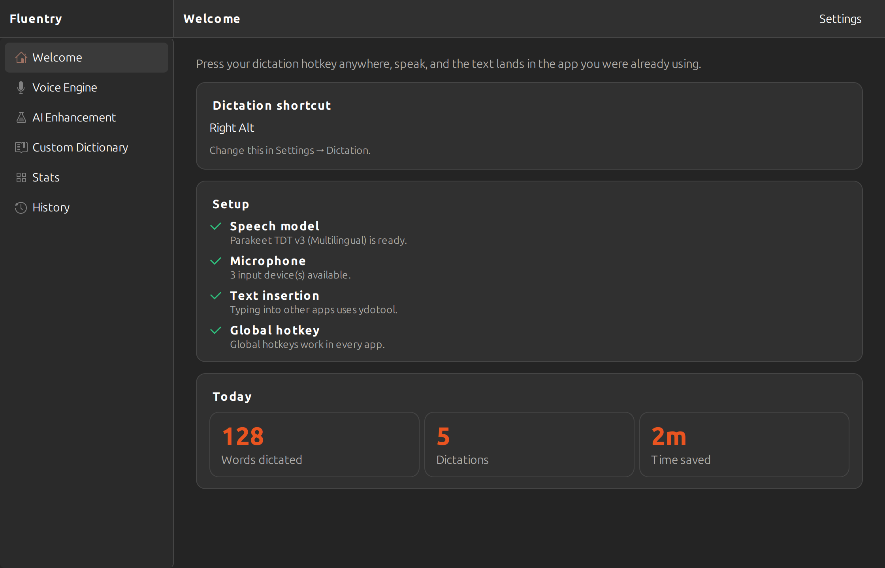
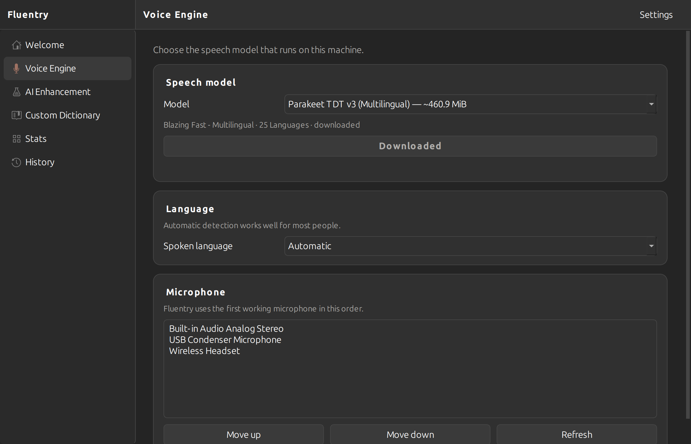
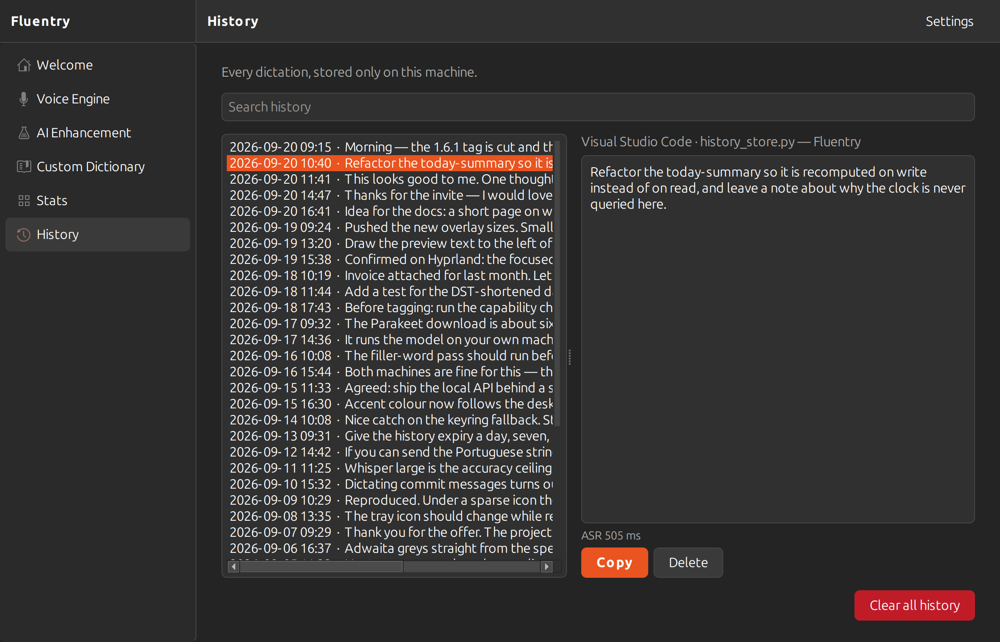
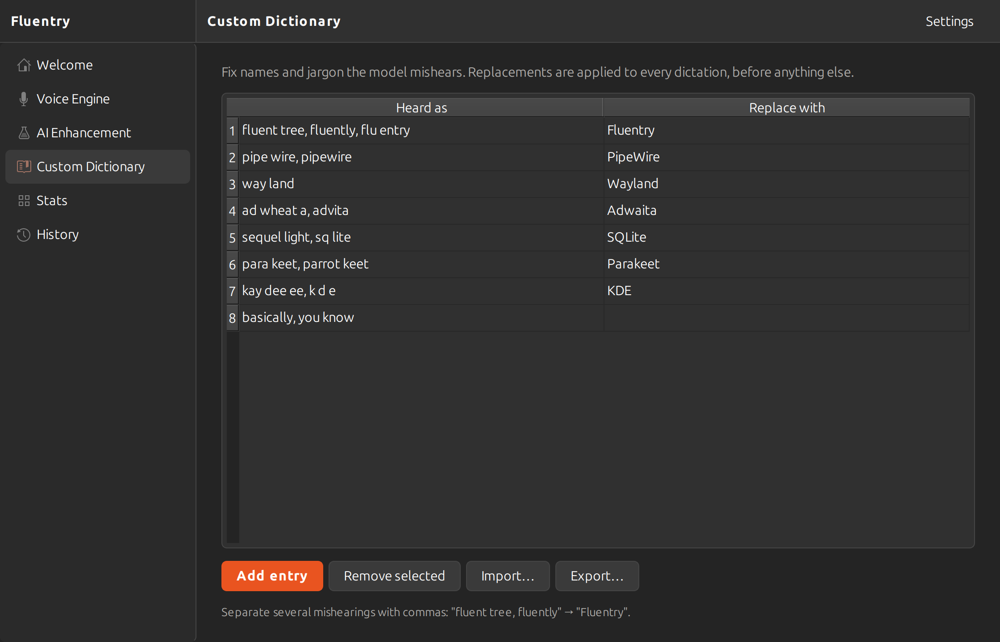
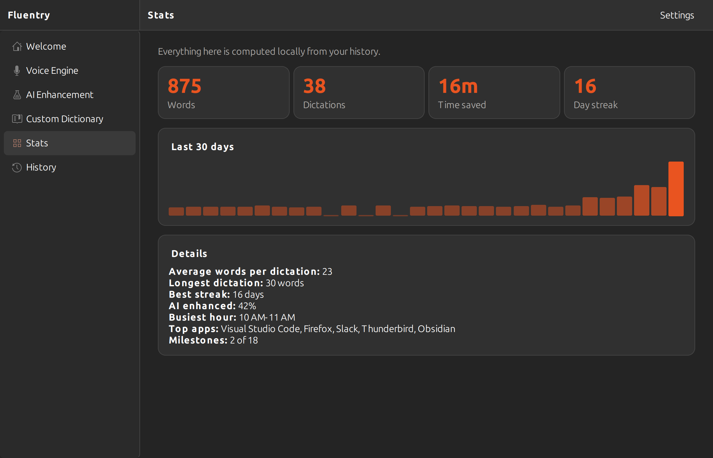
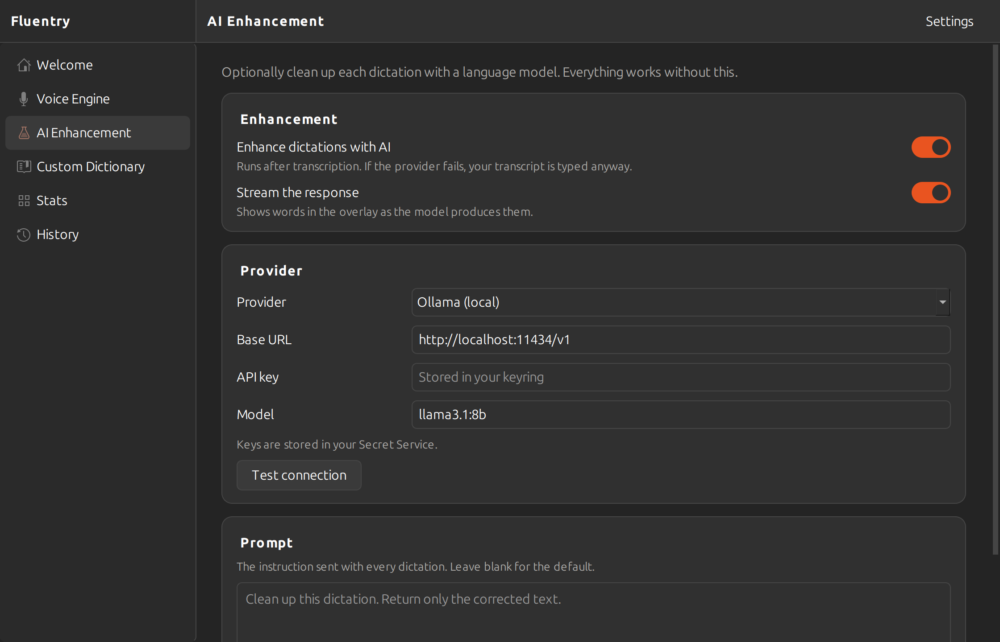
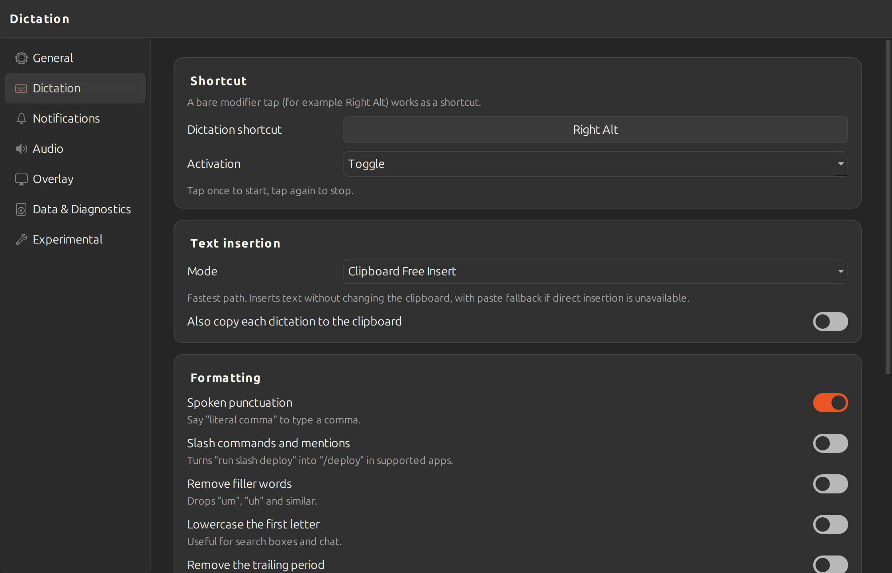
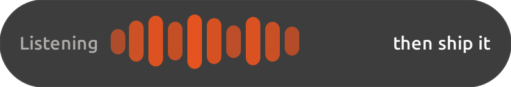

Speech that stays on your machine
Whisper and Parakeet run on your own hardware — no account, no upload, no per-minute bill. A short phrase comes back in about 300 ms on a plain CPU, in dozens of languages.
You think faster than you type. Hold a key, say what you mean, and the words appear in whatever app you are already in — your editor, your browser, your chat window. The speech model runs on your own machine, so it is quick and nothing you say leaves the computer.
fix the um parser bug literal comma then ship it
fix the parser bug, then ship it
Your microphone through PipeWire, your shortcuts read straight from the keyboard, your API keys in your keyring — and speech models that never phone home.
Whisper and Parakeet run on your own hardware — no account, no upload, no per-minute bill. A short phrase comes back in about 300 ms on a plain CPU, in dozens of languages.
Colleagues’ names, project code names, the jargon your field runs on. Tell Fluentry once what it keeps mishearing and it stops. Leave the replacement blank to cut a word entirely.
“literal comma” becomes a comma. Switch on filler-word removal and the “um”s and “uh”s go with it, and a closing phrase can press Return, so a whole message goes out without your hands leaving the desk.
Send a transcript through a language model to tidy the grammar — running locally under Ollama or LM Studio, or wherever you like. Off unless you turn it on, and you can switch it off for the apps where raw text is what you want.
Picks up your colour scheme, accent colour, icon theme and UI font, so it sits alongside your other windows instead of announcing itself. Tray icon, recording overlay, and settings laid out the Adwaita way.
The interface itself speaks eleven languages — English, Spanish, French, German, Portuguese, Italian, Japanese, Korean, Chinese, Hindi and Arabic — and follows your system locale on first run, with a picker in Settings if you want another. Arabic lays the whole window out right-to-left.
Transcribe a recording with one command, or switch on a loopback HTTP API and let your own tools read the history, manage the dictionary and ask for transcripts.
Adwaita’s own greys, so it sits next to GNOME Settings without announcing itself. These are rendered straight from the running app in both the light and the dark it ships with — you are seeing whichever one your system is set to.







A pill at the edge of the screen with a level meter, and the words so far if you have asked for them. It never takes focus, so the cursor stays exactly where you left it and a screen reader stays on the document you are actually writing.

On Debian and Ubuntu the package brings everything with it, including the piece that lets Wayland remember your permission. The first launch walks you through picking a language, downloading an engine and trying a dictation.
$ sudo apt install ./fluentry_1.0.3_all.deb $ fluentry
Not on Debian or Ubuntu? pip install 'fluentry[gui,audio,input,whisper,parakeet,libei]' — but a virtualenv cannot see the system python3-gi, so create it with --system-site-packages or the permission dialog returns on every launch.
guitray, overlay, windowsaudiolow-latency captureinputglobal hotkeyswhisperthe Whisper enginesparakeetthe Parakeet enginesonnxNemotron and Coherelibeityping on WaylandModels download the first time you use them and live in your cache directory, so uninstalling takes them with it. Switch whenever you like.
| Engine | Runtime | Notes |
|---|---|---|
| Whisper Tiny … Large | faster-whisper or whisper.cpp | 99 languages; the runtime is fetched when you pick one, or an existing whisper.cpp binary is used |
| Parakeet TDT v3 / v2 | onnx-asr | ~640 MB int8, multilingual, ~300 ms for a short phrase |
| Nemotron, Cohere Transcribe | sherpa-onnx | their exports use that runtime’s layout |
Wayland withholds things from every application, Fluentry included. Typing into other apps is solved — through the input path the compositor sanctions, which asks your permission once. Here is what is left, and fluentry --check tells you which applies to your session before you hit it.
| Capability | X11 | Wayland | What it needs there |
|---|---|---|---|
| Typing into other apps | Works | Works | Through libei and the RemoteDesktop portal, which asks once and remembers. Needs python-libei and your distribution’s libei and python3-gi |
| Global hotkeys | Works | Needs a group | sudo usermod -aG input "$USER", then log back in |
| Knowing the focused app (per-app rules, and Ctrl+Shift+V in terminals) |
Works | Works | Hyprland, Sway and KWin expose it directly. GNOME hides it, so the package ships a small Shell extension (Fluentry Focus) that the app enables for you — you just log out and back in once to finish |